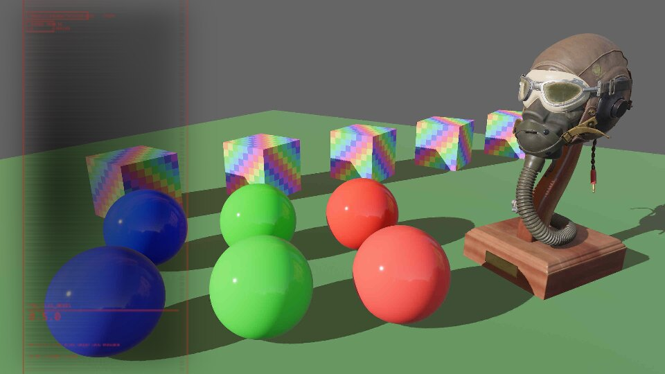
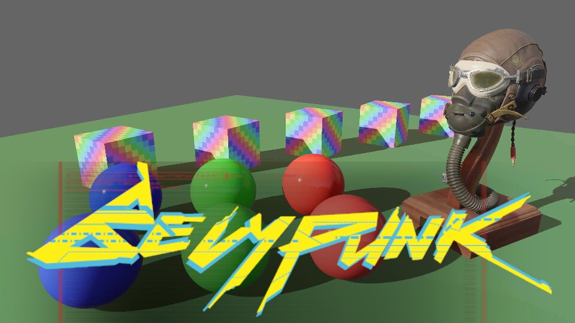
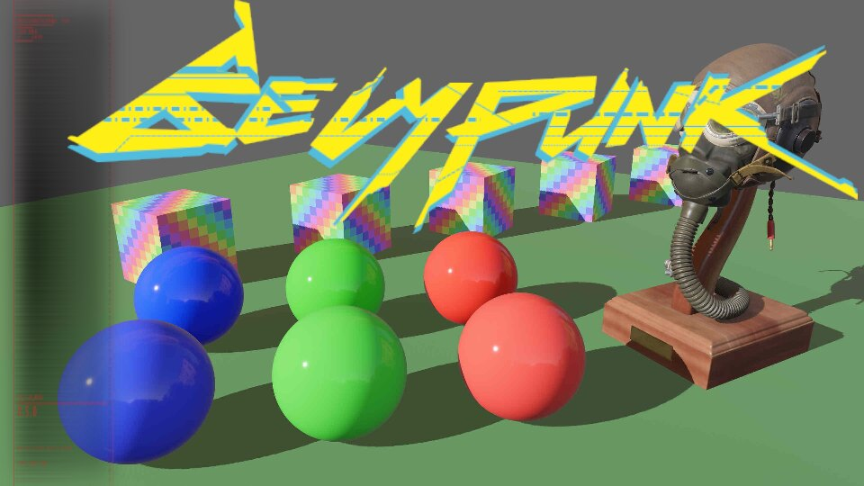
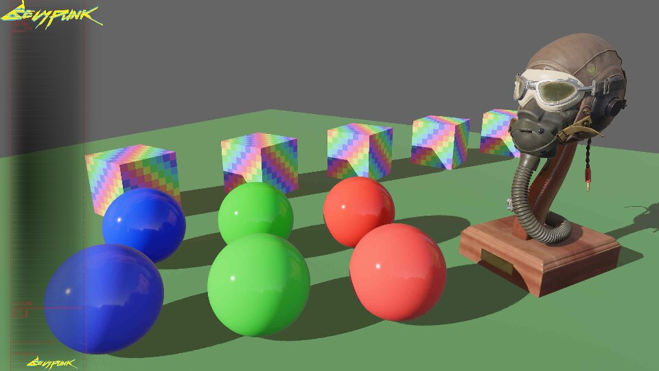
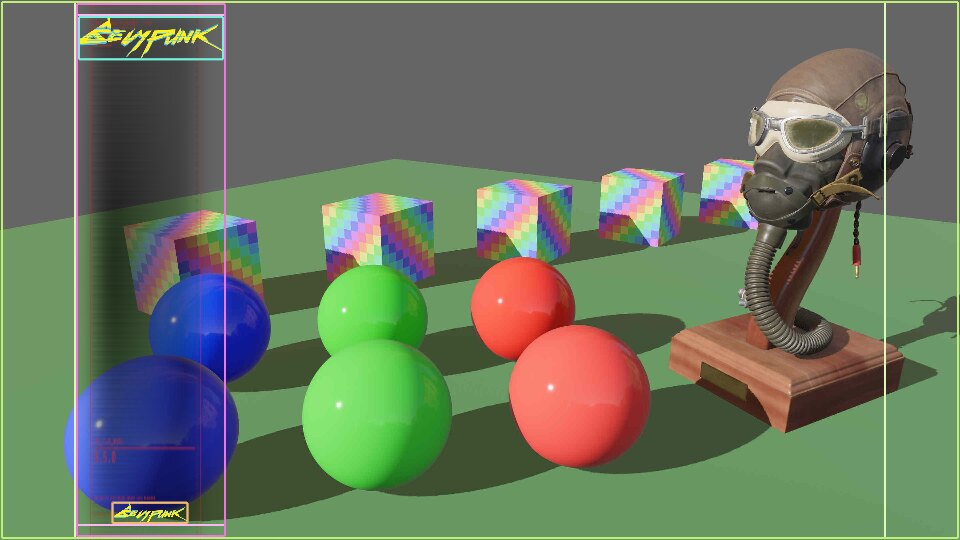
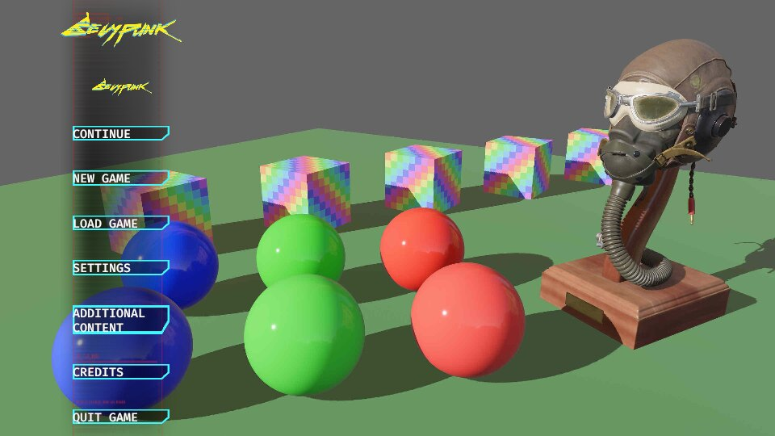
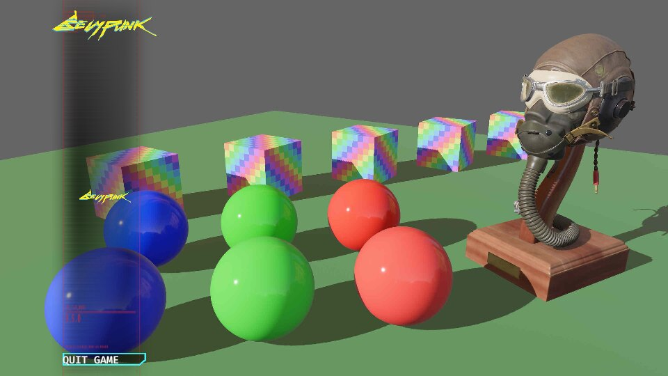
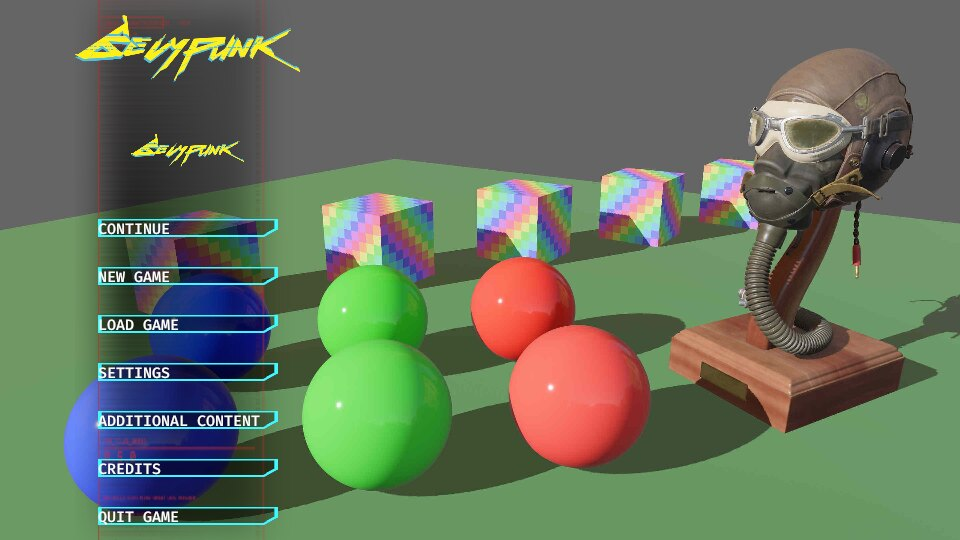
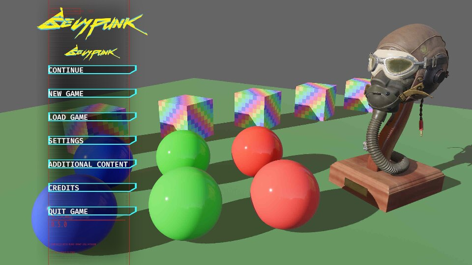

Define a menu using the dsl! macro
We added previously cuicui_dsl, cuicui_layout, and cuicui_layout_bevy_ui
to our Cargo.toml.
Now let’s write some rust code.
We first import the relevant stuff:
use bevy::prelude::*;
use cuicui_dsl::{dsl, EntityCommands};
use cuicui_layout::{dsl_functions::*, LayoutRootCamera};
use cuicui_layout_bevy_ui::UiDsl;Then, we initialize the bevy app, all standard bevy stuff.
fn main() {
App::new()
.add_plugins((
DefaultPlugins,
// Notice that we add the plugin here.
cuicui_layout_bevy_ui::Plugin,
))
.add_systems(Startup, setup)
.run();
}Now we want to spawn the UI. Our UI will be a single menu with 7 buttons, each
with a different text. The buttons and menu all have a background, so we need
a Res<AssetServer>.
fn setup(mut cmds: Commands, serv: Res<AssetServer>) {cuicui_layout uses the LayoutRootCamera component to resize layouts based
on the viewport size. So let’s spawn the camera with it:
cmds.spawn((Camera2dBundle::default(), LayoutRootCamera));Now let’s spawn the menu. The methods available on UiDsl are listed on docs.rs.
Documentation
Methods available in the
dsl!macro are the methods available in the choosen DSL type (in this case, it would be theUiDslmethods). Check the documentation page for the corresponding type you are using as DSL. All methods that accept an&mut selfare candidate.
Since UiDsl by default Deref<Target=LayoutDsl>, the methods on LayoutDsl are
also available.
We want:
- A column menu with the
board.pngbackground offset from the left edge of the screen by 100 pixels. - This column contains a large
logo.pngand a smaller one, it also contains 7 buttons. We would want some margin between the edges of the screen and the content of the coulmn, also between the button and the edge of the column.
Let’s first start by setting up the column. We define the handles outside of
the dsl! macor, for clarity:
let title_card = serv.load("logo.png");
let bg = serv.load("background.jpg");
let board = serv.load("board.png");Then we build the menu. We use the dsl! macro.
- As first parameter we specify the DSL we want to use, here we use
UiDslfromcuicui_layout_bevy_ui, that we imported earlier. - Then, we pass a
&mut EntityCommands, which we create by usingCommands::spawn_empty - Finally, we start the definition of the UI scene.
dsl! {
<UiDsl>
&mut cmds.spawn_empty(),The first container should have a ScreenRoot component, so that it always has
the same size as the viewport with the LayoutRootCamera component.
In the LayoutDsl,
you add the screen root component by calling the LayoutDsl::screen_root method.
Root(screen_root row distrib_start image(&bg)) {We use row, because the root node is not the column, it is the “screen”,
the container that will hold the column, and we want to position the column
relative to the left side of the screen.
Speaking of which, we use distrib_start, so that the the first object is
placed to the left of the container, the “start” of the distribution zone.
The image(&bg) is the UiDsl::image method, we pass to it the handle to the
"background.jpg" image.
If you have the example code open in your IDE, you should be
able to click on individual methods in the dsl! macro and jump to their source
or see their documentation.
We name the node Root, so that it’s easier to identify it using bevy-inspector-egui.
Let’s see the result:
Root(screen_root row distrib_start image(&bg)) {
Column(column image(&board))
}
Now let’s add the two logo images to the column.
Root(screen_root row distrib_start image(&bg)) {
Column(column image(&board)) {
TitleCard(image(&title_card))
TitleCard2(image(&title_card))
}
}
Ooops. Something bad happened here! Interestingly, cuicui_layout printed an
error message. It noticed that the column overflowed its container. The error is:
ERROR bevy_mod_sysfail: Node Root's width is overflowed by its children!
Notes:
- Root's inner size (excluding margins) is 640×360
- There are 1 children of total width 877.5px.
- The largest child is Column
So far, it doesn’t teach us anything that we didn’t know…
Rules
The best way to diagnose this kind of errors is to set rules on the size of the responsible nodes.
Rules in cuicui_layout are size constraints on layout nodes. You can set
rules on width and height independently. In the LayoutDsl DSL, you set
constraints through width, height, or both at the same time with rules.
The size of a container may be:
- Fixed (using
px(pixels)): it is set to a specific number of pixels. - Child-relative (using
child(ratio)): The container size is equal to it’s children’s size on that axis TIMESratioPLUS twice the margin of that axis (more on margins later). - Parent-relative (using
pct(percent)): it is set to a given percent of it’s parent inner size1.
So here, we know that Column is too large for Root. So let’s limit its width to 100 pixels.
We also want the column to span the whole height of the screen, so we will set its
height to pct(100).
Root(screen_root row distrib_start image(&bg)) {
Column(column width(px(100)) height(pct(100)) image(&board)) {
TitleCard(image(&title_card))
TitleCard2(image(&title_card))
}
}Let’s see the result:

We now see the whole column, but the logos are still way too large. We get a new error message:
ERROR bevy_mod_sysfail: Node Column's width is overflowed by its children!
Notes:
- Column's inner size (excluding margins) is 100×360
- There are 2 children of total width 585px.
- The largest child is TitleCard2
In the previous error message, the total width of column was 877.55px, in this,
it is 100px, as we expected, but the children’s width is 585px, which is larger than 100
since last time I checked.
As a hint. Before we specified the size of Column, its rules were the default.
The default rule for containers is child(1.5) (585 * 1.5 = ???).
Content size
So our images are why we are overflowing the menu. But why is it so? Well, unlike container nodes, leaf nodes (nodes without children), if they have an image or text, get their size from the image’s or text’s size.
logo.png just so happens to be a 585px by 173px image. Hmm, 585 seems familiar…
Leaf nodes, like container nodes, can have rule constraints, so let’s limit the size of the images:
Root(screen_root row distrib_start image(&bg)) {
Column(column rules(px(100), pct(100)) image(&board)) {
TitleCard(width(pct(100)) image(&title_card))
TitleCard2(width(pct(50)) image(&title_card))
}
}
We see no errors in the terminal. Still something haunts us. We only defined the width, how comes the height also changed?
It is because, for leaf nodes containing images, if only one axis has a set rule, the other axis will try to keep aspect ratio with the set rule axis, so as not to distort the image.
For example here, for TitleCard, we set the width to 100% of its parent, therefore
100 pixels. So given that the size of logo.png is 585x173, if we set its width
to 100, its height will be 29.6 pixels.
Margin
I find the column to be too much to the left, so let’s add margin between the edge of
the container and the first item on the main axis2 using main_margin:
Root(screen_root row distrib_start main_margin(50.) image(&bg)) {
Column(column rules(px(100), pct(100)) main_margin(10.) image(&board)) {
// ...Nice, much better. Note that margin is always symetrical. With main_margin(50.),
we added 50 pixels of margin to the left, but also to the right.
The debug view displays the container margins using a light color. You enable
the debug view by running your app with the --features cuicui_layout/debug flag.
Check this out:

In the screenshot, the Root container outlines the whole screen, with lime lines.
Notice the lighter-colored lime lines at the left and right of the screen, those
are the margins of the Root container. You see that the column is directly aligned
with the start of the inside of the Root.
Is this a victory? Only a small battle is won, the war is still ahead. We have to add our seven buttons.
Code
For the buttons, we will need text. This is a UiDsl method, UiDsl::text.
We also want to use button.png as background for our buttons. We loaded it
using let button_bg = serv.load("button.png").
So let’s proceed:
Root(screen_root row distrib_start main_margin(50.) image(&bg)) {
Column(column rules(px(100), pct(100)) main_margin(10.) image(&board)) {
TitleCard(width(pct(100)) image(&title_card))
TitleCard2(width(pct(50)) image(&title_card))
Entity(image(&button_bg) width(pct(80)) text("CONTINUE"))
Entity(image(&button_bg) width(pct(80)) text("NEW GAME"))
Entity(image(&button_bg) width(pct(80)) text("LOAD GAME"))
Entity(image(&button_bg) width(pct(80)) text("SETTINGS"))
Entity(image(&button_bg) width(pct(80)) text("ADDITIONAL CONTENT"))
Entity(image(&button_bg) width(pct(80)) text("CREDITS"))
Entity(image(&button_bg) width(pct(80)) text("QUIT GAME"))
}
}
No errors! But very very ugly. Like wow:
- The column stretches to the whole screen, it makes the layout bottom hevy
- “ADDITIONAL CONTENT” height is twice as large as the other buttons, breaking the harmony.
- The code itself is ugly, we got a lot of repeating code.
Well, on the estethic side, we can’t do much with those assets, but we can set the fixed width of the column to 150 pixels instead of 100.
For code quality, we use an abstraction. Let’s define a function:
fn button(cmds: &mut EntityCommands, button_bg: &Handle<Image>, button_text: &'static str) {
dsl! {
<UiDsl> cmds,
Entity(text(button_text) named(button_text) image(button_bg) width(pct(80)))
}
}Don’t try to convert it into a closure! Rust’s type system can’t handle closures that accepts references of different lifetimes, and this will cause a lot of cryptic error messages.
Now, let’s use the the code statement to call that function:
Root(screen_root row distrib_start main_margin(50.) image(&bg)) {
Column(column rules(px(150), pct(100)) main_margin(10.) image(&board)) {
TitleCard(width(pct(100)) image(&title_card))
TitleCard2(width(pct(50)) image(&title_card))
code(let cmds) { button(cmds, &button_bg, "CONTINUE") }
code(let cmds) { button(cmds, &button_bg, "NEW GAME") }
code(let cmds) { button(cmds, &button_bg, "LOAD GAME") }
code(let cmds) { button(cmds, &button_bg, "SETTINGS") }
code(let cmds) { button(cmds, &button_bg, "ADDITIONAL CONTENT") }
code(let cmds) { button(cmds, &button_bg, "CREDITS") }
code(let cmds) { button(cmds, &button_bg, "QUIT GAME") }
}
}Not that much better reallly!
But what are we looking at? code statements allow you to inline rust code
within the dsl! macro.
What if instead we defined the button names in a list and use a for loop inside
the code statement?
let menu_buttons = [
"CONTINUE",
"NEW GAME",
"LOAD GAME",
"SETTINGS",
"ADDITIONAL CONTENT",
"CREDITS",
"QUIT GAME",
];Root(screen_root row distrib_start main_margin(50.) image(&bg)) {
Column(column rules(px(150), pct(100)) main_margin(10.) image(&board)) {
TitleCard(width(pct(100)) image(&title_card))
TitleCard2(width(pct(50)) image(&title_card))
code(let cmds) {
for text in menu_buttons {
button(cmds, &button_bg, text)
}
}
}
}
Well, that’s bad. What happened?
If you have the code open in your text editor, look at the type of cmds in let cmds.
Can you guess why this is happening?
You’ll notice it is an &mut EntityCommands. What we are doing in that for loop
is insert over and over our UiDsl on the same entity. This is why we end up with
a single button.
cuicui_dsl passes &mut EntityCommands to code blocks because as a rule, the cuicui DSL
only allows a single entity per statement.
But this doesn’t solve our problem, how would we spawn seven buttons with a
for loop?
The answer is to:
- Spawn a container for the buttons
- Spawn the buttons within that container
code(let cmds) {
dsl! { <UiDsl> cmds,
ButtonContainer(column rules(pct(100), pct(60)))
};
cmds.with_children(|cmds| {
for text in menu_buttons {
button(&mut cmds.spawn_empty(), &button_bg, text);
}
});
}
We got back our seven buttons! The code did end up a bit more complex than the initial repeating code, but if your layout gets complex, this way of abstracting can get handy.
So to finish it up, we still need to add some “empty space” at the bottom of the column and some margin for the logo.
The final result:
let menu_buttons = [
"CONTINUE",
"NEW GAME",
"LOAD GAME",
"SETTINGS",
"ADDITIONAL CONTENT",
"CREDITS",
"QUIT GAME",
];
let button_bg = serv.load("button.png");
let title_card = serv.load("logo.png");
let bg = serv.load("background.jpg");
let board = serv.load("board.png");
dsl! {
<UiDsl>
&mut cmds.spawn_empty(),
Root(screen_root row distrib_start main_margin(50.) image(&bg)) {
Column(image(&board) rules(px(150), pct(100)) main_margin(10.) column) {
TitleCard(width(pct(100)) image(&title_card))
TitleCard2(width(pct(50)) ui(title_card))
code(let cmds) {
dsl! { <UiDsl> cmds,
ButtonContainer(column rules(pct(100), pct(60)))
};
cmds.with_children(|cmds| {
for text in menu_buttons {
button(&mut cmds.spawn_empty(), &button_bg, text);
}
});
}
BottomSpacer(height(pct(15)))
}
}
};
Woohoo! Time to treat yourself.
Next, we will do this using cuicui_chirp and the chirp language.
The main axis is the axis of direction of the container. For a row
container, the main axis is the x axis. For a column container, it is the
y axis. The cross axis is the axis perpendicular to the corss axis (so
y for row containers and x for column containers)
The “Inner size” is the size of a node deduced its margins on a given axis. It’s the effective size children can occupy, so we use that for percentage.